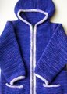

|
||
Premium Patterns Wintry Mix Mitts Love Bytes HawkeyeFree Patterns Kiddie Cadet Summerlin Ruffled Scarf Seamless DS Sock Simply Seamless Pouch Myriads of MushroomsExtras DIY Mitten Blocker Felt Patch Tutorial Yarn Dyeing Tutorial Needle Pouches Knitting Journal |
September 15, 2007 - Posted by Alice SchneblyFO - Camdyn's Tomten JacketProject Specs This is definitely one FO I am proud of. I’ve been intimidated to knit one of EZ’s patterns before now because of her succinct instructions, but now I realized concise doesn’t always mean unclear. I totally understood every single step, and even made a couple simple modifications along the way. I ended up knitting all the stitches for the pocket on waste yarn and added them on at the end rather that right at the start. At this point in the project I still had no idea if I would have enough yarn for any of the extras, so I wanted to play it safe. As it turns out I overestimated how much yarn I needed, but that’s fine by me—maybe I’ll have to knit Camdyn some matching mittens? Not only was this my first time knitting an Elizabeth Zimmermann pattern, but also my first time doing a couple of other techniques. Grafting the hood in garter stitch turned out looking surprisingly neat, and was much easier than I had anticipated. I also enjoyed doing the applied i-cord borders (as you can see I added it at every opportunity). For some reason I couldn’t find instructions in my EZ books at the time (like I said before, this was late at night), so I used instructions I found on the web. I can’t find the exact site I found the instructions on, but the way I did it was most similar to this one. On my first attempt I picked up stitches in my contrast color thinking somehow these stitches would show in the i-cord, but it just ended up looking sloppy, and the backs of the picked up stitches could be seen on the wrong side of the jacket. I ripped that all out, and re-picked up the stitches in the main body color. This ended up looking much better and neater and I’m glad I took the time to take all that work out. If you have any questions about the i-cord border, please feel free to ask! Even with the setbacks this was still a quick pattern to knit, though I think I could have finished it much faster if there weren’t so many options. Collar, cardigan, hood, solid, stripes, slip stitch pattern, buttons, zipper, toggles, ties—too many choices! Although I’m complaining a bit about it now, it’s all in fun—really the charm of this pattern is that you can knit it over and over and always have a new version in the end! The only suggestion I have if you’re going to knit this pattern, is when incorporating the underarm stitches into the sleeves, knit them together on the wrong side, and purl them together on the right side. I didn’t like how it looked a little too noticeable when I first did this knitwise on the right side. When I purled them together they just seemed to sink back in and blend into the garter stitch fabric. I also contemplated knitting the sleeves in the round for a bit, though I figured even though I despise seaming, my purling goes at a much slower pace than my knitting. In the end seaming wasn’t horrible at all, and I think it turned out looking pretty good!
I have to finish up by saying how much I loved working with this yarn. It’s so soft and I love the subtle changes in the colors. It has fuzzed and started to pill a bit, but I expected it and it doesn’t really bug me. It’s totally worth it for the cozy factor of the yarn. This jacket is still a bit too warm to wear now, but it will be for the cool desert nights in a couple of weeks! Camdyn really likes wearing it too, so I can tell it will be a favorite item this Fall. |
   Recent ReviewsRecent Posts
 Our Favorites
|
| © 2007 KathrynIvy.com | ||

{kind=link}
{kind=link}
{kind=link}